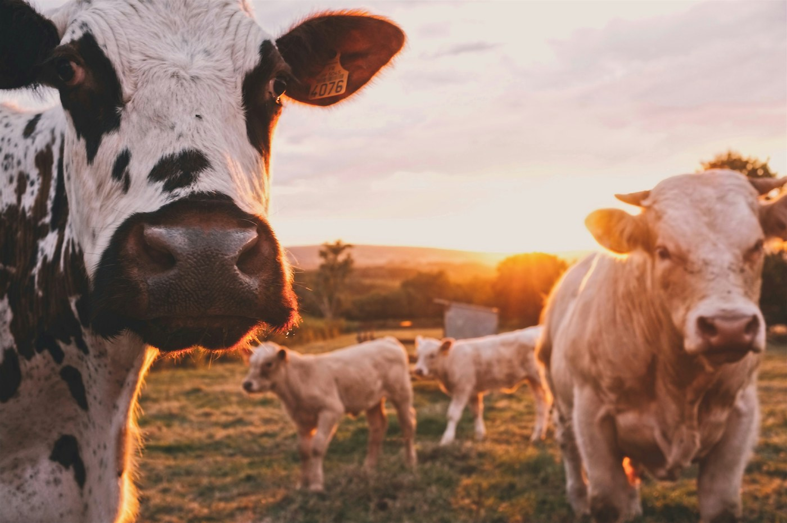

Aliments de bétail et dérivés
Tourteaux, pulpe de betterave, luzerne, son de blé et paille pour l'élevage, issus de nos filières agricoles
Tourteaux, pulpe de betterave, luzerne, son de blé et paille pour l'élevage, issus de nos filières agricoles
Les Greniers du Saïss valorise les sous-produits de sa chaîne agricole (tourteaux, pulpe de betterave et résidus de transformation) pour proposer une gamme d'aliments de bétail énergétiques et protéiques. Adaptés aux besoins nutritionnels des bovins, ovins, caprins et volailles, nos produits répondent aux exigences des éleveurs et des fabricants d'aliments composés.

Nos gammes disponibles
Tourteaux
Pulpe de betterave
Luzerne
Son de blé
Paille
Divers
Conditionnements
Sacs de 25 kg ou 50 kg, big bags de 500 à 1 000 kg, vrac sur demande, conditionnement adapté aux filières bovine, ovine, caprine et avicole.
Applications
Alimentation animale
Tourteaux, pulpe de betterave, luzerne, son de blé et paille pour l'alimentation des bovins, ovins, caprins et de la volaille.
Sous-produits valorisés
Tourteaux, pulpe de betterave et résidus de transformation agroalimentaire valorisés en compléments nutritifs.
Import / Export
Livraison internationale, documentation complète, conditionnement aux normes de l'import et de l'export.